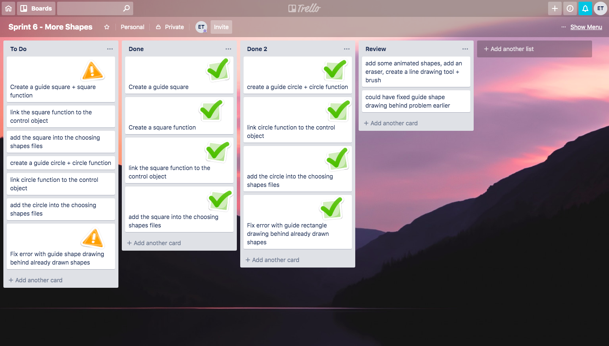
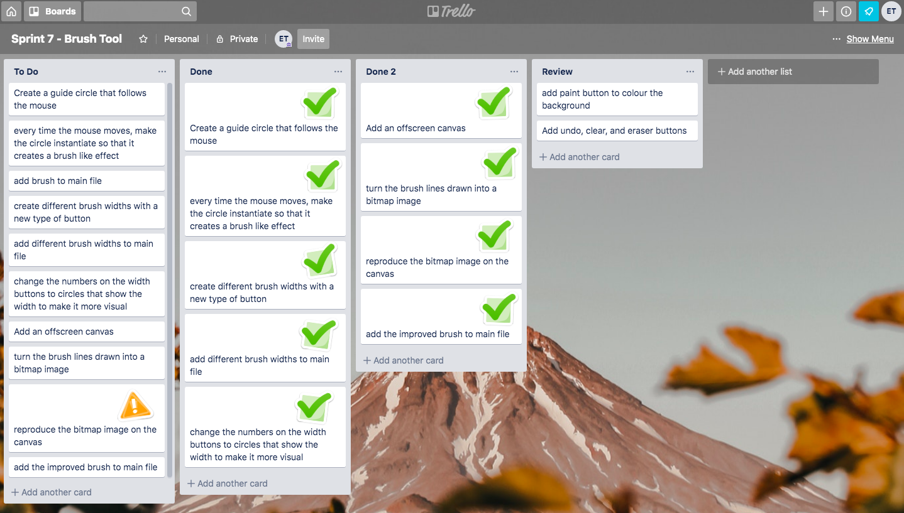

Sprint 1
Aim: Create a drawing canvas in which rectangles can be drawn. Rectangles should not be able to be drawn outside this drawing canvas.
Link to finished sprint: Sprint 1
Link to Trello Board: Trello Sprint 1

Testing for Sprint 1
Next Step: Allow the user to draw different shapes on the drawing canvas.
Sprint 2
Aim: Allow the user to draw circles within the drawing canvas instead of rectangles.
Link to finished sprint: Sprint 2
Link to Trello Board: Trello Sprint 2

Testing for Sprint 2
Next Step: Fix the error where the stroke of the dragging circle doesn’t show up by making circles inside a bounding rectangle.
Sprint 3
Aim: Allow the user to draw ellipses within the drawing canvas instead of rectangles.
Link to finished sprint: Sprint 3
Link to Trello Board: Trello Sprint 3

Testing for Sprint 3
Next Step: Allow the user to draw exact squares.
Sprint 4
Aim: Allow the user to choose different shapes to draw with
Link to finished sprint: Sprint 4
Link to Trello Board: Trello Sprint 4

Testing for Sprint 4
Sprint 5
Aim: Allow the user to choose different shapes and colours to draw with
Link to finished sprint: Sprint 5
Link to Trello Board: Trello Sprint 5

Testing for Sprint 5
Sprint 6
Aim: Create more shapes for the user to draw with
Link to finished sprint: Sprint 6
Link to Trello Board: Trello Sprint 6

Testing for Sprint 6
Sprint 7
Aim: Create a brush tool
Link to finished sprint: Sprint 7
Link to Trello Board: Trello Sprint 7

Testing for Sprint 7
Sprint 8
Aim: Allow the user to change the background colour, undo the last thing they drew, clear the canvas, and erase what they have drawn
Link to finished sprint: Sprint 8
Link to Trello Board: Trello Sprint 8
Testing for Sprint 8